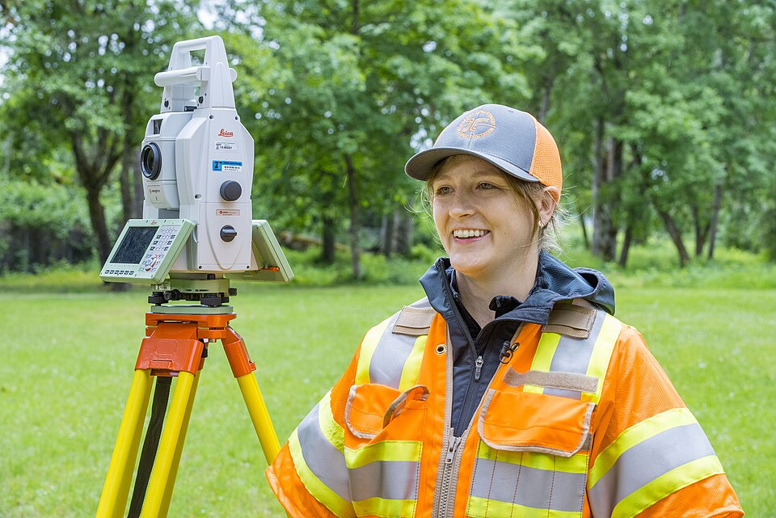
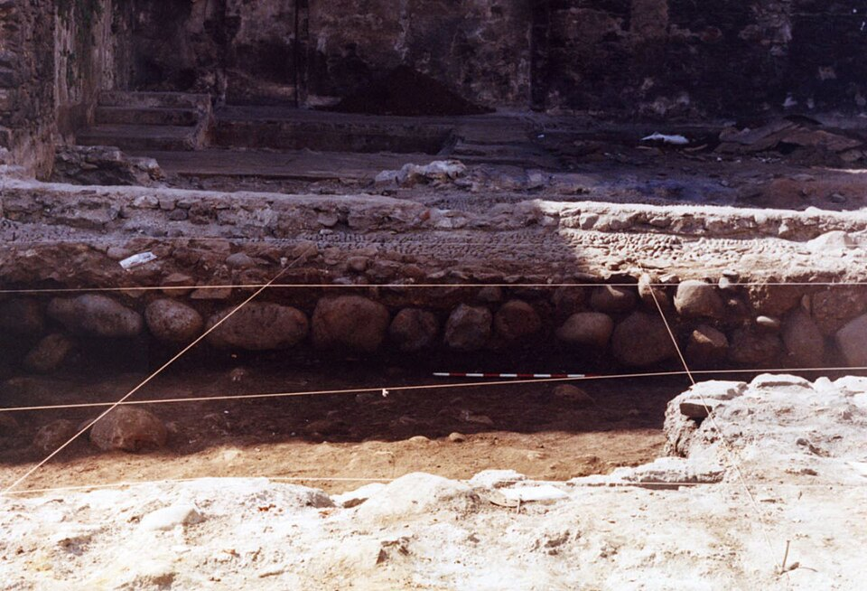
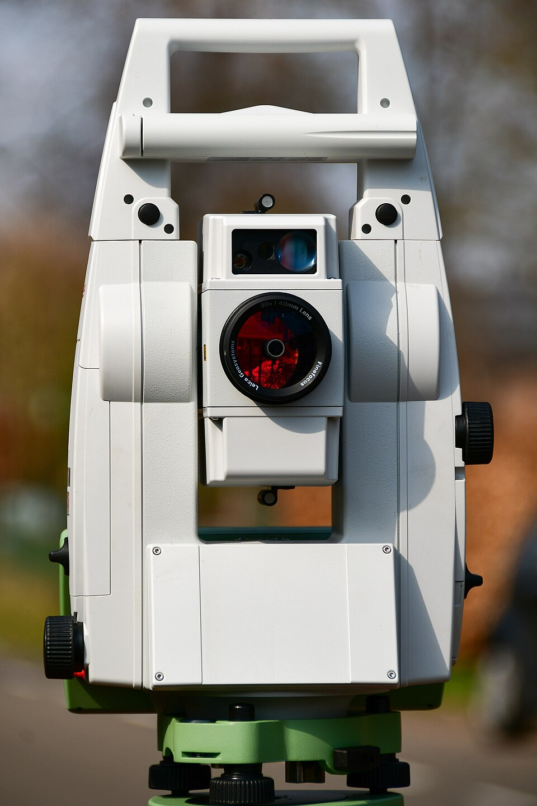
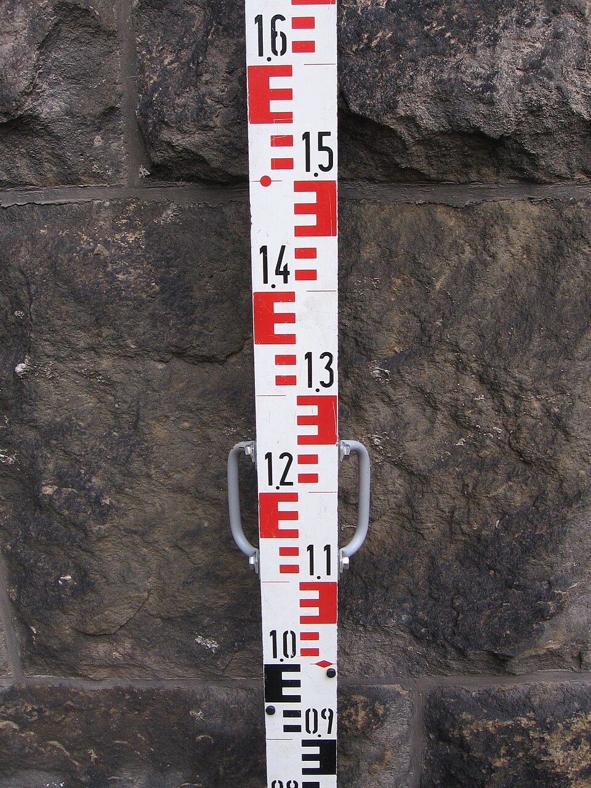
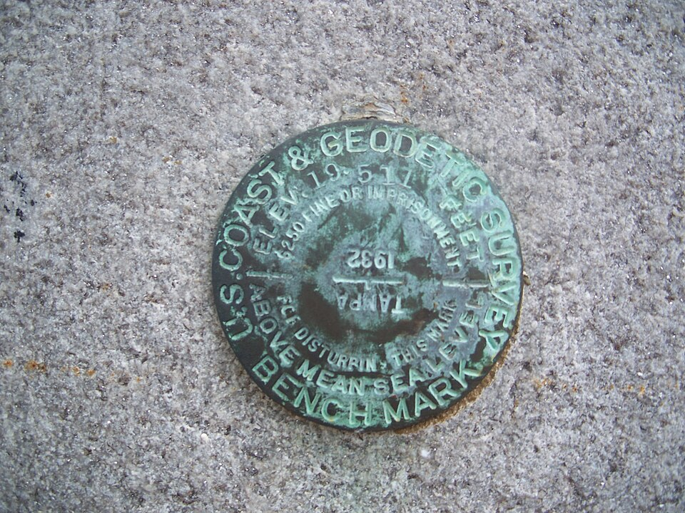
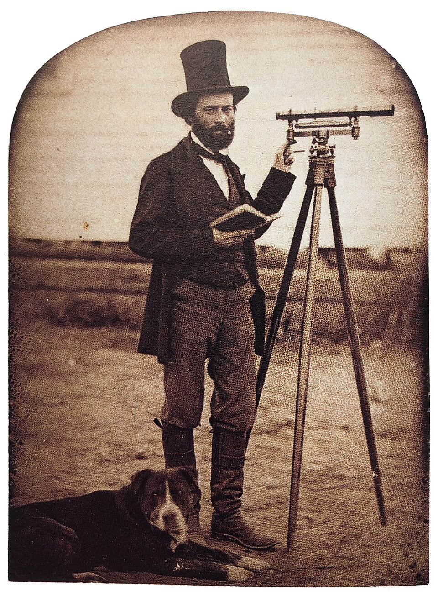
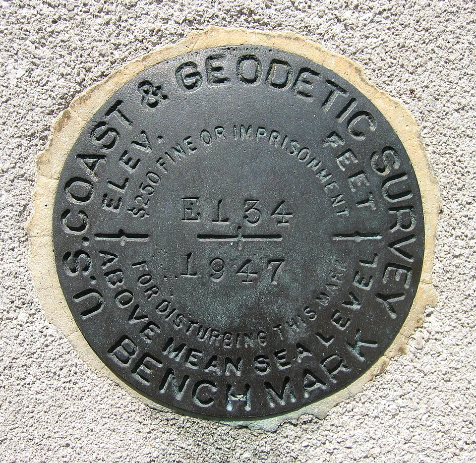

A ranging rod lying by a boundary stone: red and white segments of equal length. Borrowed: 4 equal red/white segments as the progress gauge in C.

Total station on yellow tripod legs, the surveyor reading the side display. Borrowed: tripod yellow as C's housing colour.

Archaeologists' string lines pegged over a trench. Borrowed: taut 1 px lines between fixed points (the traverse legs).

Leica TS16 from the back: white housing, a red ring around the objective, a small black display. Borrowed: a red ring marks the 'measure' key.

Levelling staff: red E-shaped centimetre blocks, decimetre numbers. Borrowed: the E graduation as the scale of the countdown.

US Coast & Geodetic Survey disk: legend stamped around the rim, elevation struck in the centre. Borrowed: stamped rim legend for the success record.

1854 surveyor holding his field book by the theodolite. Borrowed: the field book's ruled columns (station, bearing, distance) for the fiche.

Benchmark E 134 (1947): 'ELEV FEET', '$250 fine or imprisonment for disturbing this mark'. Borrowed: the record states what the point is, plainly, in stamped type.